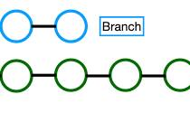

What is wireframe?
A wireframe is a blueprint of a website or application outlining the structure layout and fucntionality before any design or styling is added on
Read more
A wireframe is a blueprint of a website or application outlining the structure layout and fucntionality before any design or styling is added on
Read more
The purpose of a readme file is to primarily serve as an official document with instructions and user manual for project, dataset and software repository
Read more
A branch in Git is a seperate workspace where you can make changes and try new ideas withou affecting the main project
Read more